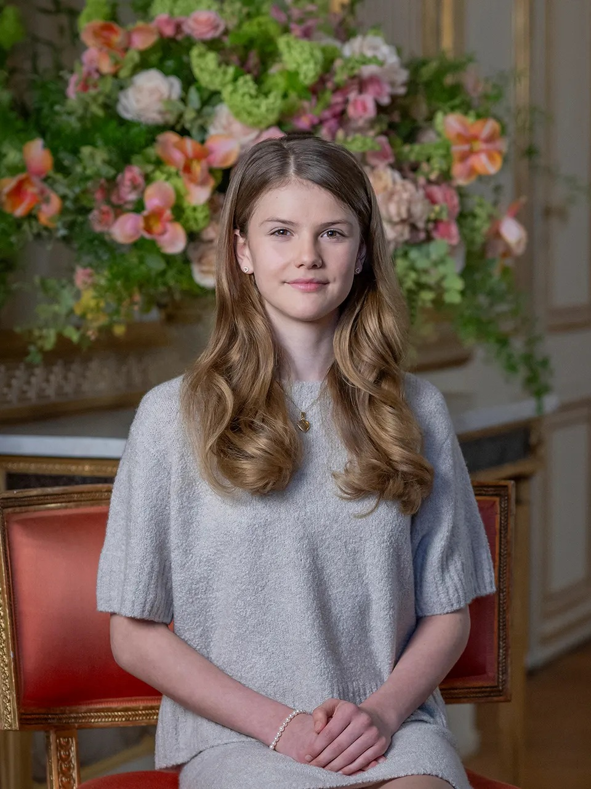

Esztella hercegnő
Svédország
| Született: | 2012. február 23. |
| Szülők: | Dániel és Viktória |
| Uralkodóház: | Bernadotte |
Rövid életrajz
Esztella hercegnő 2014-ben kezdett el óvodába járni, Stockholmban. 2018 augusztusában kezdte meg tanulmányait a Campus Manilla Iskolában.
Mivel még Esztella nagyon fiatal, ezért még nem is első a trónöröklési sorban, hanem második. A jelenlegi király nagyapja, Károly Gusztáv, az örökös pedig édesanyja, Viktória.
Érdekesség: Esztella hercegnő a svéd történelem első nője, aki azzal a joggal született, hogy a koronát nem válthatja le egy későbbi férfi örökös születése, valamint a svéd történelem első személye, aki egy női trónörökös gyermekeként született.
← Vissza a térképhez